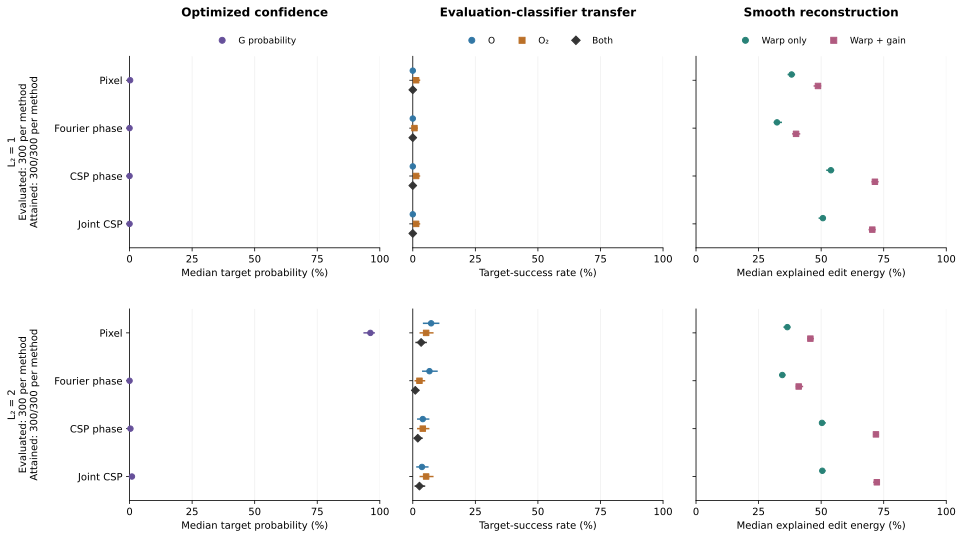
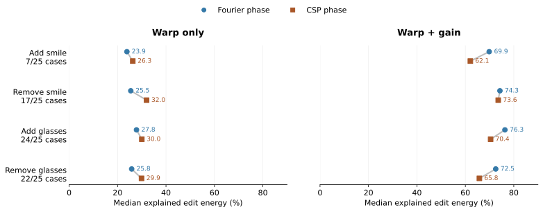
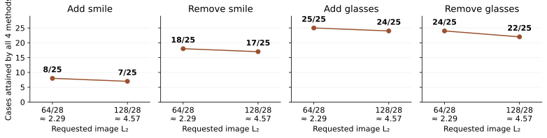

Confidence Is Not EvidenceProbing Classifier Sensitivity
with Steerable Lens
Controlled edits in four representations reveal different rankings under classifier transfer and smooth reconstruction.
Read the paper abstract
Moving an image along a classifier's gradient is a common way to probe what change would carry it across a decision boundary, but crossing that boundary does not by itself establish a recognizable change toward the target class. We introduce Steerable Lens, a framework for investigating classifier sensitivity through complex steerable-pyramid (CSP) interventions, with pixel and Fourier-phase edits as comparators. At matched image-change budgets, we measure three quantities separately: the optimized classifier's confidence, transfer to independent classifiers, and compatibility with a smooth image transformation. These measurements yield different method rankings. On MNIST at L₂ = 2, pixel edits reach a median target probability of 96.2%, yet joint independent-classifier agreement is infrequent and smooth reconstruction explains less edit energy than for CSP. On CelebA the structural ordering between representations depends on the reconstruction model. In a pilot human study, CSP edits receive more ratings of clear attribute change and no visible corruption than pixel or Fourier-phase edits. Frozen band probes further reveal fine-scale sensitivity in the examined driver classifiers, while larger budgets reduce common attainment across bands and controls. These results position CSP as a controlled diagnostic representation and motivate evaluating optimized confidence, classifier transfer, and smooth reconstruction separately, without treating any one as certification of recognizable target-class change.

What is controlled, and what is measured?
Pixel, Fourier phase, CSP phase, and Joint CSP start from the same source–target pairs. The main comparisons match final pixel-space L₂ distance; intermediate optimizer steps are not matched across methods.
MNIST results below use L₂ = 2 on 300 cases. CelebA uses L₂ = 128/28 (approximately 4.57), with comparisons restricted to cases where all four methods attain the budget.
Did the optimized score rise?
Optimized confidence. G is the classifier whose gradient produces the edit. Its target probability measures the response pursued during optimization, not independent validation.
Do other classifiers agree?
Independent transfer. Two classifiers excluded from edit optimization are evaluated separately and jointly. Agreement shows transfer; it does not establish what a person sees.
Can a smooth transformation explain it?
Smooth compatibility. E measures the fraction of edit energy explained by a restricted smooth warp, with optional spatial gain. A better fit does not certify recognizable target change.
How the four edit representations differ
The representation determines which image coordinates the gradient can change. We compare direct pixel edits with phase and amplitude edits, then evaluate the resulting images at matched final distances.
Edit the pixels directly
The update acts on image intensities. This is the direct comparator: it follows the classifier gradient without a Fourier or steerable-pyramid representation.
Change global Fourier phase
The edit changes phase in the image’s Fourier representation. Its coordinates are global frequency components, rather than spatially localized pyramid bands.
Change local, multiscale phase
The complex steerable pyramid separates image structure by position, orientation, and scale. CSP phase edits change phase in those localized bands.
Change phase and amplitude together
Joint CSP uses both phase and amplitude coordinates of the complex steerable pyramid. It expands the available edits while retaining the multiscale representation.
This diagram describes the edit coordinates. It does not imply that any representation guarantees a semantic change.
Models and experimental protocols
| Experiment / input | Driver G | Evaluation classifiers | Pyramid backend | Gradient refresh | Image-change budget |
|---|---|---|---|---|---|
| MNIST · 28×28 grayscale | CNN_MNIST_GRAY | O: ResNetMini (width 32); O₂: TinyMLP (width 512) | Plenoptic complex SteerablePyramidFreq | Recomputed at each optimization step | L₂ = 1 and 2 |
| CelebA · 64×64 grayscale (178-pixel center crop) | CNN_FER2013, binary attribute output | O: ResNetMini (width 32); O₂: TinyMLP (width 512), binary outputs | Plenoptic complex SteerablePyramidFreq | Recomputed at each optimization step | L₂ = 64/28 and 128/28 |
| ImageNet cat comparisons · 224×224 RGB | Robust ResNet-50 (L₂ ε = 3 checkpoint) | No evaluation-classifier result recorded in these cat comparisons | Custom LocalPyramid; RGB phase edits | Live: every step; fixed: once at source | Amplification 30–1000; image distances vary |
| ImageNet golf / face close-ups · 224×224 RGB | Robust ResNet-50 (L₂ ε = 3 checkpoint) | O: standard ResNet-18 | Custom LocalPyramid; Y-only phase, chroma fixed | Live: every step; golf also has a fixed-source comparison | Amplification 120 or 1000; image distances vary |
L₂ is Euclidean image distance on the experiment’s image representation; amplification is an update parameter. The supplied dog strip with incomplete metadata is excluded from this protocol summary. Frozen-band probes use a source gradient and have their own settings in the sensitivity analysis below.
Confidence, transfer, and reconstruction give different answers
The same 300 MNIST source images are evaluated at two recorded image-distance budgets. The aligned panels report the three measurements defined above.

At L₂ = 2, pixel edits reach median driver target probability 96.2%, while both evaluation classifiers predict the target on 10/300 edits. Joint target counts are 3/300 for Fourier phase, 6/300 for CSP phase, and 8/300 for Joint CSP. The CSP variants have greater median smooth-reconstruction compatibility at this budget.
Exact counts, denominators, and both budgets
| Method | Median G probability | O target | O₂ target | Both target | Median E: warp | Median E: warp + gain | Evaluated | Attained / requested |
|---|---|---|---|---|---|---|---|---|
| Pixel | 0.2226% | 0/300 | 4/300 | 0/300 | 38.2% | 48.7% | 300 | 300/300 |
| Fourier phase | 9.08e-05% | 0/300 | 2/300 | 0/300 | 32.4% | 40.0% | 300 | 300/300 |
| CSP phase | 0.001071% | 0/300 | 4/300 | 0/300 | 53.9% | 71.5% | 300 | 300/300 |
| Joint CSP | 0.001544% | 0/300 | 4/300 | 0/300 | 50.7% | 70.4% | 300 | 300/300 |
| Method | Median G probability | O target | O₂ target | Both target | Median E: warp | Median E: warp + gain | Evaluated | Attained / requested |
|---|---|---|---|---|---|---|---|---|
| Pixel | 96.2% | 22/300 | 16/300 | 10/300 | 36.5% | 45.7% | 300 | 300/300 |
| Fourier phase | 0.001574% | 20/300 | 8/300 | 3/300 | 34.5% | 41.0% | 300 | 300/300 |
| CSP phase | 0.3491% | 12/300 | 12/300 | 6/300 | 50.3% | 71.9% | 300 | 300/300 |
| Joint CSP | 0.9521% | 11/300 | 16/300 | 8/300 | 50.5% | 72.2% | 300 | 300/300 |
Uncertainty and scope
Sources are the resampling unit, preserving all observations from a source across methods and budgets. These data contain 300 distinct source images. The downloadable paired method differences use the same bootstrap draws; separate marginal intervals should not be used as a test of a paired difference. Intervals are conditional on the trained models, pointwise, and not adjusted for multiple comparisons. Zero observed successes produce a zero-width percentile-bootstrap interval; this does not establish a zero population success rate. Attainment is 300/300 for every method at both budgets, so no cases are excluded here.
Estimates, intervals, paired differences, and provenance · Explore reconstruction results
The reconstruction model changes the ranking
On the same retained CelebA cases, CSP phase has higher median explained energy than Fourier phase under a warp-only fit; Fourier phase has higher values when spatial gain is added. “More structural” therefore depends on the transformation family used to measure it.
Results describe cases where all compared methods attained the requested distance. At L₂ = 128/28, this retains 7/25 add-smile cases, 17/25 remove-smile cases, 24/25 add-glasses cases, and 22/25 remove-glasses cases. The ranking plot is conditional on these retained sets.

Exact values and retained-case counts
| Task | Retained / requested | Warp only | Warp + gain | ||
|---|---|---|---|---|---|
| Fourier phase | CSP phase | Fourier phase | CSP phase | ||
| Add smile | 7/25 | 23.9% | 26.3% | 69.9% | 62.1% |
| Remove smile | 17/25 | 25.5% | 32.0% | 74.3% | 73.6% |
| Add glasses | 24/25 | 27.8% | 30.0% | 76.3% | 70.4% |
| Remove glasses | 22/25 | 25.8% | 29.9% | 72.5% | 65.8% |
Both fits use an 8×8 grid. Cases are retained only when all four methods attain the budget; these summaries do not describe all requested cases. The differences are descriptive, without a significance claim. All four methods and both reconstruction models.

Attainment for each method and their common set
| Task | L₂ | Pixel | Fourier phase | CSP phase | Joint CSP | All four |
|---|---|---|---|---|---|---|
| Add smile | 2.29 | 20/25 | 19/25 | 9/25 | 14/25 | 8/25 |
| Add smile | 4.57 | 20/25 | 13/25 | 9/25 | 14/25 | 7/25 |
| Remove smile | 2.29 | 23/25 | 21/25 | 21/25 | 21/25 | 18/25 |
| Remove smile | 4.57 | 23/25 | 18/25 | 21/25 | 21/25 | 17/25 |
| Add glasses | 2.29 | 25/25 | 25/25 | 25/25 | 25/25 | 25/25 |
| Add glasses | 4.57 | 25/25 | 24/25 | 25/25 | 25/25 | 24/25 |
| Remove glasses | 2.29 | 24/25 | 25/25 | 25/25 | 25/25 | 24/25 |
| Remove glasses | 4.57 | 23/25 | 24/25 | 25/25 | 24/25 | 22/25 |
View the full warp-plus-gain figure

What did two raters report? An exploratory pilot
Two voluntary friends-and-family raters each evaluated the same 90 edited images from 24 source–attribute cases, yielding 180 ratings. This convenience sample describes responses to these selected edits; it does not establish a population-level perceptual advantage for any method.
| Method | Rater A | Rater B | Pooled ratings |
|---|---|---|---|
| Pixel | 2/23 (8.7%) | 0/23 (0.0%) | 2/46 (4.3%) |
| Fourier phase | 6/23 (26.1%) | 3/23 (13.0%) | 9/46 (19.6%) |
| CSP phase | 13/22 (59.1%) | 7/22 (31.8%) | 20/44 (45.5%) |
| Joint CSP | 10/22 (45.5%) | 12/22 (54.5%) | 22/44 (50.0%) |
| Method | Rater A | Rater B | Pooled ratings |
|---|---|---|---|
| Pixel | 0/23 (0.0%) | 0/23 (0.0%) | 0/46 (0.0%) |
| Fourier phase | 8/23 (34.8%) | 7/23 (30.4%) | 15/46 (32.6%) |
| CSP phase | 18/22 (81.8%) | 12/22 (54.5%) | 30/44 (68.2%) |
| Joint CSP | 19/22 (86.4%) | 16/22 (72.7%) | 35/44 (79.5%) |
Each cell reports the number choosing that response divided by all ratings for that method, followed by the proportion. Each rater assessed 23 Pixel, 23 Fourier-phase, 22 CSP-phase, and 22 Joint-CSP edits. Pooled denominators count two ratings per edited image, not independent images or participants. The two outcomes are separate questions; their counts should not be added.
The raters differ in their judgments. For clear attribute change, Rater A reports 13/22 for CSP phase and 10/22 for Joint CSP; Rater B reports 7/22 and 12/22, respectively. These descriptive results do not support a stable ranking between the two CSP variants or demonstrate that an automated metric predicts human perception.
Download per-rater and pooled descriptive counts
What a follow-up study should establish
A stronger study would use a prespecified image sample, blinded method labels, randomized presentation, and more independently recruited raters. Analysis should account for repeated ratings of images and repeated responses from each rater. This is a proposed follow-up, not a completed validation.
Any future public website questionnaire responses belong to a separate study and are not included above. Visitors may have seen labeled demonstrations, and participation is self-selected; those responses should not be pooled with the original pilot or treated as blinded validation.
A qualitative natural-image example
The same source is edited toward the lynx label with a recomputed gradient and with a fixed source gradient. Amplification is equal; resulting image distances are not matched, so this demonstration is not a controlled ranking of the two update rules.
Cat → lynx

↔ Swipe the figure to compare source, live, and fixed.
Limitations and reproducibility
What these examples can establish
The galleries illustrate recorded edits; they do not estimate how often an edit will look like its target. Independent classifier transfer and smooth reconstruction are diagnostic measurements, and neither replaces human evaluation.
The human pilot is descriptive, with two complete rating sets from voluntary friends-and-family participants. It supports observations about those images, not a general guarantee for CSP.
Additional sensitivity analysis: frozen single-band probes
Signed margin advantage is the change in target-minus-source logit margin, multiplied by the edit sign, minus the average signed change from random directions in the same phase band at the same image L₂ distance. Positive values indicate a larger directional response than the random controls. Scale 0 = finest; scale 3 is coarsest, with four orientations per scale.

MNIST test images and CelebA faces had historical project exposure; CelebA also inherits historical checkpoint selection. Structural comparisons on faces are conditional on common budget attainment (7/25, 17/25, 24/25 and 22/25 at the larger budget). The interactive results page retains these denominators.